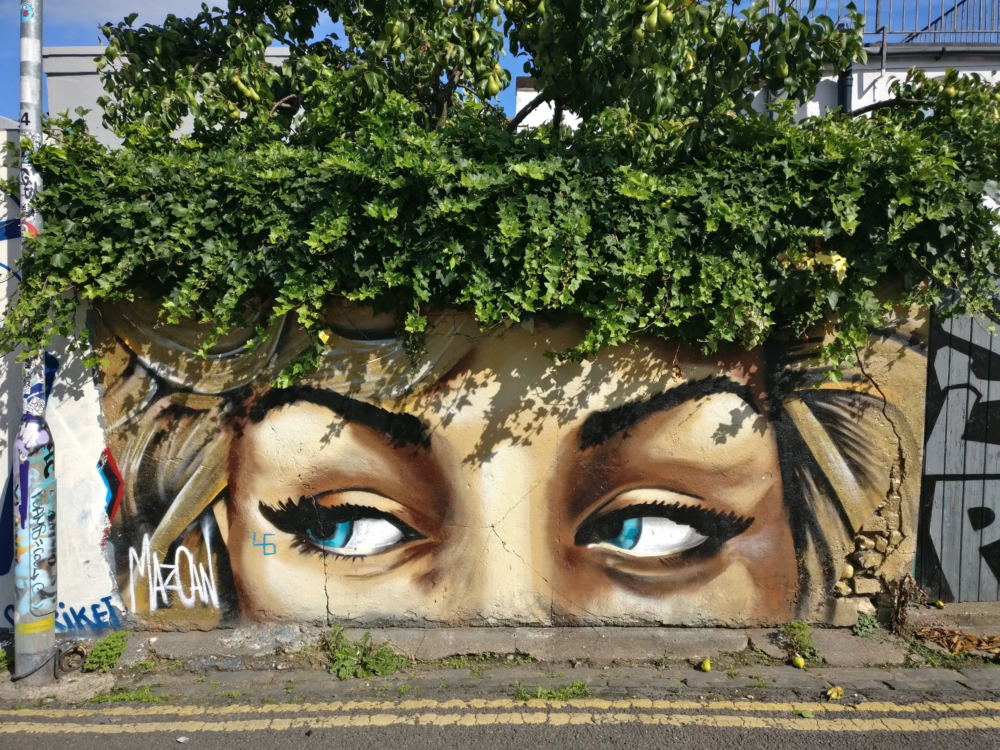
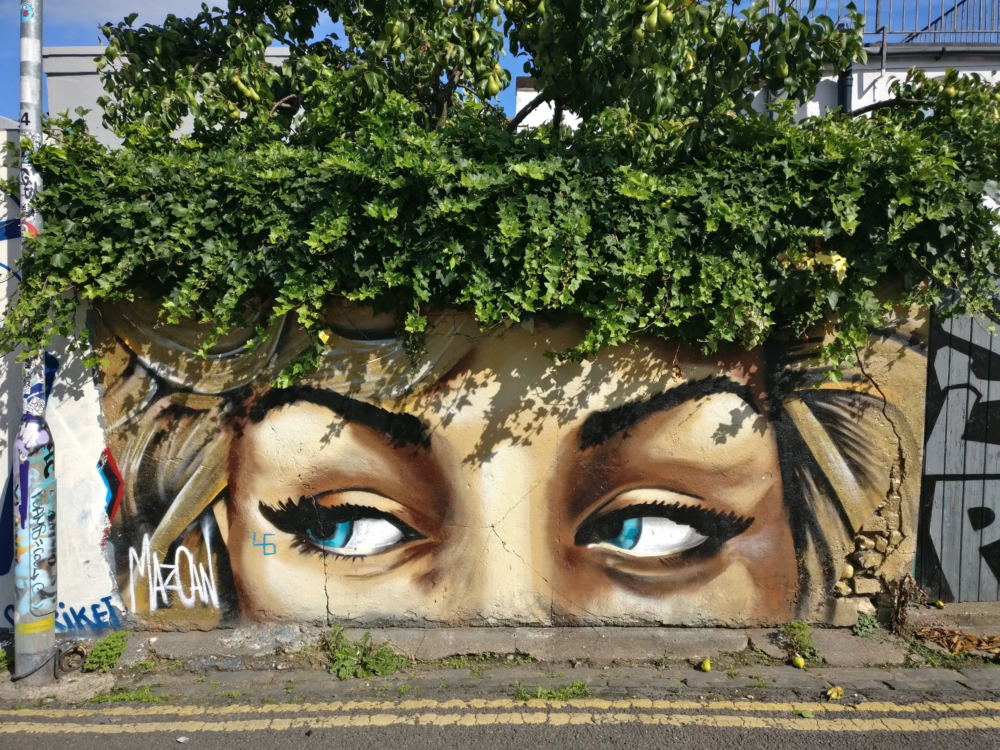

Nuestra pasión por el arte se refleja en nuestra misión de impulsar y apoyar a los artistas locales. Creemos firmemente que el arte callejero y urbano es una forma de expresión cultural que merece ser valorada y celebrada en todo el mundo. Por eso, nos hemos comprometido a ofrecer una plataforma que visibilice el talento y la creatividad de quienes trabajan en las calles, con la esperanza de que sus mensajes y estilos únicos lleguen a públicos más amplios.
En nuestra galería virtual, damos prioridad a la autenticidad y diversidad, seleccionando cuidadosamente una variedad de obras que representan las voces únicas de la escena artística urbana. Entendemos la importancia de la libertad creativa y brindamos a los artistas un espacio para mostrar su trabajo sin limitaciones. Nuestro objetivo es ofrecer un espacio inclusivo donde los artistas puedan presentarse, contar sus historias y conectarse con un público que valore su visión.
Reconocemos la riqueza cultural que el arte callejero trae a nuestras ciudades. Cada mural o instalación es una ventana al alma del artista y refleja la realidad social que lo rodea. Impulsamos activamente la colaboración entre artistas y organizaciones locales para que juntos podamos crear un impacto positivo en la sociedad, inspirando a las personas a mirar más allá de los muros y ver el valor que el arte aporta a nuestras vidas cotidianas.


 
